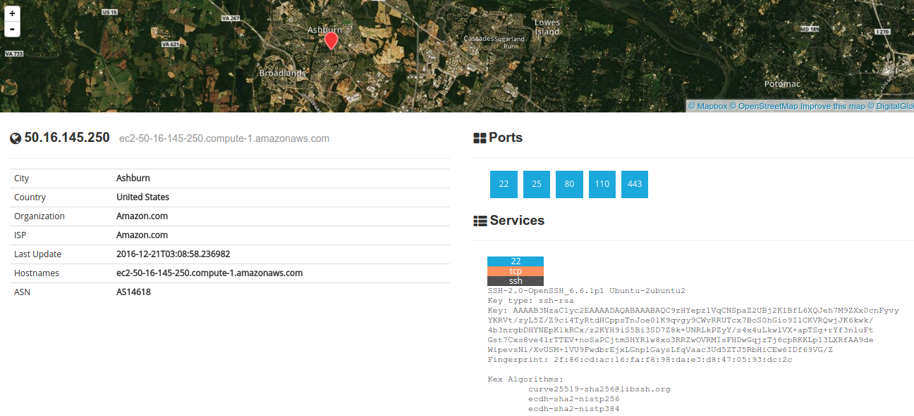

2016/12/22 - TDOH conference¶
Introduction¶
TDOH ( The Declaration of Hacker ) 成立於2013年，是一個學生取向的資訊安全社群組織。由一群對資安極具熱情的學生們組成，期望用社群的力量來推廣資訊安全、增加技術交流、改善台灣資安學習環境。
shodan.io¶
Shodan is a search engine for finding specific devices, and device types, that exist online. [1]
For this search, I looked for “apache”

From there you can pivot to a few key areas in the results. Starting on the left sidebar, we see a good amount of summary data:
- Results map
- Top services (Ports)
- Top organizations (ISPs)
- Top operating systems
- Top products (Software name)
Then in the main section we get the full results list, including:
- IP address
- Hostname
- ISP
- When the entry was added to the database
- The country it’s located in
- The banner itself
Then, for even more information you can click details, which takes you into that host itself:

As with any search engine, Shodan works well with basic, single-term searches, but the real power comes with customized queries.
Here are the basic search filters you can use:
Search example :
apache country:"TW" city:"Taipei"
Or you can use the “Explore” button on the main Shodan site to look at common searches and results, which are illuminating.

後記：我選了Explore 內的 default password 搜尋到Banner裡面含有default password的結果，然後就不小心進去了…這網站真的是太強大啦！
用注音鍵碼當密碼真的安全嗎？ [2]¶
臺灣人流傳一種 1qaz (ㄅㄆㄇㄈ，BoPoMoFo) 雜湊演算法來取密碼，就連身邊主管職位的朋友都有在用。乍看之下， 1qaz 雜湊演算法(或是其他注音輸入法)只有臺灣人能夠解析，其他語系的駭客組織並無法探究箇中奧妙。可是，這樣產生出來的密碼真的有足夠的強度嗎？
- 優點:
- 容易產生很長的密碼 (容易大於最小長度)
- 容易同時具備英文數字與特殊符號
- 容易記憶
- 缺點:
- 容易產生很長的密碼 (容易超過最大長度)
- 產生出來的密碼具有某種規律
- 特性:
- 同音字非常多 (即 Hash collisions , 雜湊碰撞)、組成元素單調 - 我愛單單 : ji39420 20 - 我愛丹丹 : ji39420 20 - 目的地 : aj42u42u4
- 不計四聲變化，共計有 414 種
- 若再計入四聲變化，排除不在教育部重編國語辭典修訂本裡的 31 個部分組合，則總共有 1,338 種
- 比較:
- [a-z0-9] : 36種字元 - 僅需 2 個字元就有 1,296 種組合 - 僅需 3 個字元就有 46,656 種組合 - 僅需 4 個字元就有 1,679,616 種組合
- 注音鍵碼 : 共有 1,338 ( 414 ) 種組合，占用 2 ~ 4 個字元不等。 - 任兩個中文字的注音鍵碼有 1,790,244 種組合，占用 4 ~ 8 個字元不等。
- 以注音鍵碼為基礎的弱密碼排行:
- ji394su3 （ㄨㄛˇ ㄞˋ ㄋㄧˇ ，我愛你）
- 我愛ＯＯＯ
- ＯＯＯ 我愛你
- 94n3su3 （ㄞˋㄙˇㄋㄧˇ ，愛死你）
- cl3au4a83 （ㄏㄠˇㄇㄧˋㄇㄚˇ ，好密碼）
- 使用者本人姓名的注音鍵碼
- 中文檔名的注音鍵碼
- 流行歌曲、歌詞 - jji3s06eji4 （ㄨㄛˇㄋㄢˊㄍㄨㄛˋ，我難過） - ji3ul4zo （ㄨㄛˇㄧㄠˋㄈㄟ，我要飛）
- 字元 - 94 （ㄞˋ，愛） - ji3 （ㄨㄛˇ ，我） - su3 （ㄋㄧˇ，你） - cl3 （ㄏㄠˇ，好） - c8 （ㄏㄚ，哈） - xk7 （ㄌㄜ˙，了） - a8（ㄇㄚ，嗎） - n3 （ㄙˇ，死） - yjo4 （ㄗㄨㄟˋ，最） - fu;6 （ㄑㄧㄤˊ，強）
- 結論：用注音鍵碼當密碼真的安全嗎？:
社交工程¶
社交工程技巧：操控人類心理的藝術
社交工程技巧涵蓋許多用以操控人類心理，使他們採取特定行動或透露機密資訊的技巧。「社交工程技巧」一詞指的通常是用以收集資訊或電腦系統存取權限的詭計。社交工程圈套最常見於 Web 資安威脅攻擊中，利用目前備受矚目的重大事件與新聞作為誘餌，無論是政治、運動、娛樂性質，同時也不分全球性或地區性。此外，社交工程圈套也可能利用日常活動作為誘餌，例如線上理財、投資、帳單管理以及購物等等。
沒有科技可以有效防護
Reference¶
| [1] | A Shodan Tutorial and Primer https://danielmiessler.com/study/shodan/#gs.9d0jrME |
| [2] | TDOH Conf 2016 用注音鍵碼當密碼真的安全嗎？ by PN Wu (小平) https://hackpad.com/TDOH-Conf-2016-by-PN-Wu–Z30oHnsWarW |
| [3] | APT Attack http://blog.trendmicro.com.tw/?p=123 |
| [4] | [影片]APT攻擊:一場沒有中立國的戰爭(真實案例模擬) https://www.youtube.com/watch?v=RyQiz8AudQo |
| [5] | shodan-cracking-ip-surveillance-dvr http://www.praetorianprefect.com/2009/12/shodan-cracking-ip-surveillance-dvr/ |